Note
Go to the end to download the full example code.
Color Palettes¶
Explore and customize color palettes in cnsplots.
cnsplots provides a comprehensive collection of color palettes optimized for scientific visualization, including qualitative, sequential, and diverging palettes. This example demonstrates how to visualize palettes, select specific colors, and apply custom color schemes.
Load packages¶
import glasbey
import matplotlib.pyplot as plt
import numpy as np
import palettable
import cnsplots as cns
tips = cns.datasets.load_dataset("tips")
iris = cns.datasets.load_dataset("iris")
Visualize all available palettes¶
Display all built-in palettes as color gradients.
gradient = np.linspace(0, 1, 256)
gradient = np.vstack((gradient, gradient))
def plot_palettes(cmap_list, width, height, title="", ncols=1):
cns.figure(width, height)
fig = plt.gcf()
nrows = (len(cmap_list) + ncols - 1) // ncols
axes = fig.subplots(nrows=nrows, ncols=ncols, squeeze=False)
fig.subplots_adjust(
left=0.1, right=0.98, bottom=0.02, top=0.98, hspace=0.45, wspace=0.8
)
for ax in axes.flat:
ax.set_axis_off()
for i, name in enumerate(cmap_list):
row = i % nrows
col = i // nrows
ax = axes[row, col]
ax.pcolormesh(gradient, cmap=plt.get_cmap(name))
ax.text(
-0.01,
0.5,
name,
va="center",
ha="right",
fontsize=30,
transform=ax.transAxes,
)
ax.set_axis_off()
if title:
fig.suptitle(title, fontsize=36, y=1.02)
cns.setup_matplotlib()
plot_palettes(
[
"Set1",
"Set2",
"Set3",
"Pastel1",
"Pastel2",
"Paired",
"Dark2",
"Accent",
"Tableau",
"Bold",
"BlueRed",
"ECharts",
"Ecotyper1",
"Ecotyper2",
"Ecotyper3",
"Ecotyper4",
"Ecotyper5",
"Ecotyper6",
"Cell",
"Nature",
"Science",
"Lancet",
"NEJM",
"JAMA",
"JCO",
"OkabeIto",
"TolBright",
"TolMuted",
"parula",
"gnuplot",
"hot",
"WhYlOrRd_custom",
"BuRd_custom",
"OrBu_custom",
"YlGnBu_custom",
],
1200,
1020,
ncols=2,
)
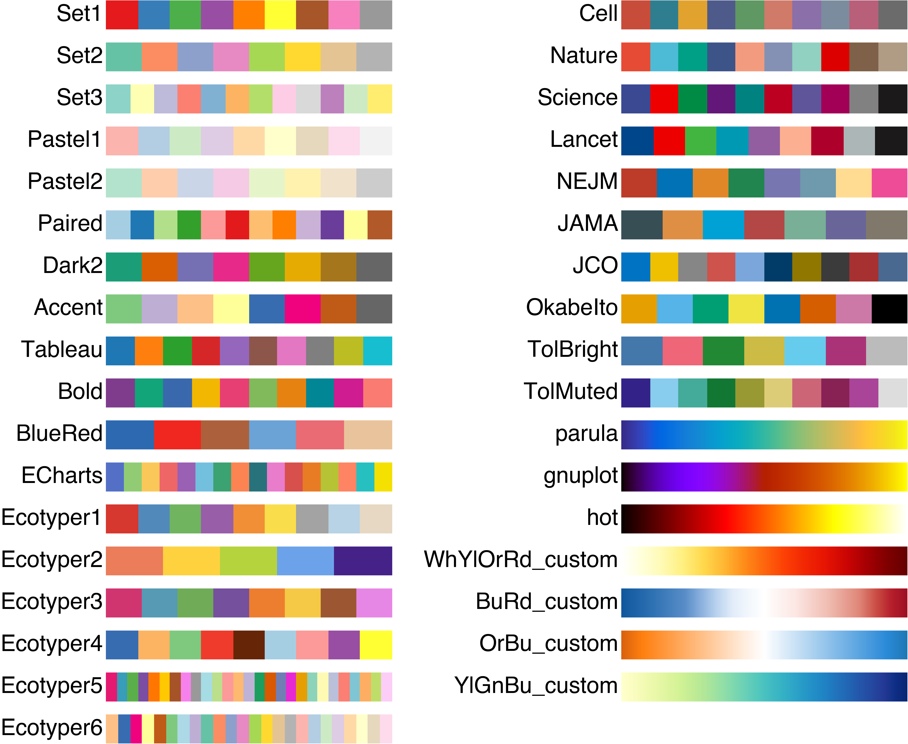
Using glasbey directly¶
Access glasbey’s extensive color library.
cns.figure(color_cycle=glasbey.create_palette(palette_size=12))
ax = cns.barplot(
data=tips,
x="day",
y="total_bill",
palette=glasbey.create_palette(palette_size=12),
)
ax.set_title("Glasbey Create")
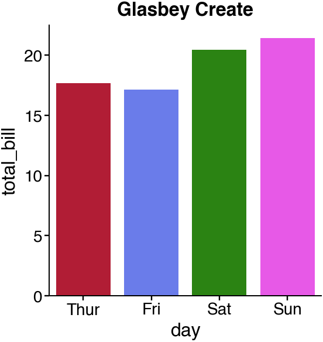
/Users/runner/work/cnsplots/cnsplots/site-build/.sphinx-staging-g9wctvk4/src/cnsplots/plots/_categorical.py:313: FutureWarning:
Passing `palette` without assigning `hue` is deprecated and will be removed in v0.14.0. Assign the `x` variable to `hue` and set `legend=False` for the same effect.
ax = sns.barplot(ax=ax, **plotting)
/Users/runner/work/cnsplots/cnsplots/site-build/.sphinx-staging-g9wctvk4/src/cnsplots/plots/_categorical.py:313: UserWarning: The palette list has more values (12) than needed (4), which may not be intended.
ax = sns.barplot(ax=ax, **plotting)
Text(0.5, 1.0, 'Glasbey Create')
Using palettable directly¶
Access palettable’s extensive color library.
cns.figure(color_cycle=palettable.wesanderson.GrandBudapest1_4.hex_colors)
ax2 = cns.barplot(
data=tips,
x="day",
y="total_bill",
palette=palettable.wesanderson.GrandBudapest1_4.hex_colors,
)
ax2.set_title("Palettable Set1")
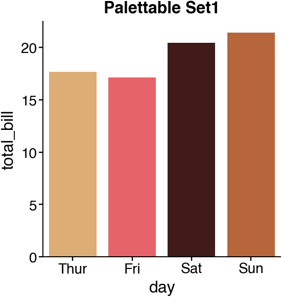
/Users/runner/work/cnsplots/cnsplots/site-build/.sphinx-staging-g9wctvk4/src/cnsplots/plots/_categorical.py:313: FutureWarning:
Passing `palette` without assigning `hue` is deprecated and will be removed in v0.14.0. Assign the `x` variable to `hue` and set `legend=False` for the same effect.
ax = sns.barplot(ax=ax, **plotting)
Text(0.5, 1.0, 'Palettable Set1')
Qualitative palettes for categorical data¶
Best for distinguishing discrete categories.
cns.setup_matplotlib()
plot_palettes(
[
"Set1",
"Set2",
"Tableau",
"Bold",
"Paired",
"Dark2",
"Cell",
"Nature",
"Science",
"JAMA",
],
600,
540,
)
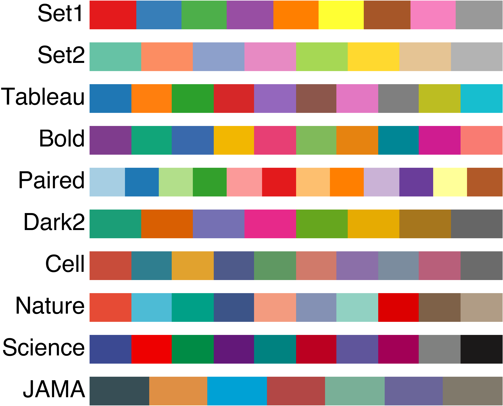
Sequential palettes for continuous data¶
Best for representing ordered values or magnitudes.
cns.setup_matplotlib()
plot_palettes(
[
"parula",
"gnuplot",
"hot",
"WhYlOrRd_custom",
"YlGnBu_custom",
],
600,
300,
)
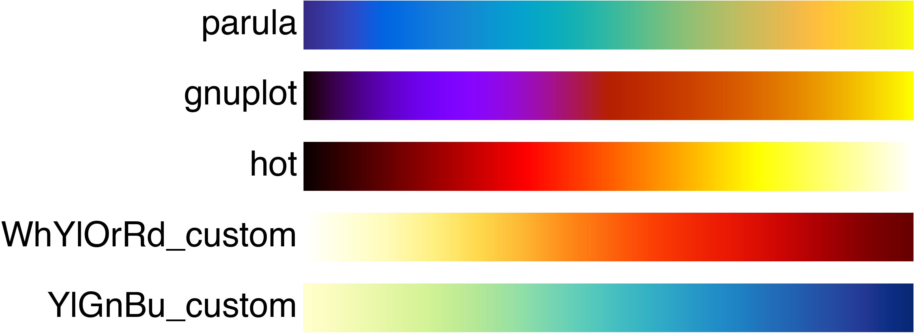
Diverging palettes for centered data¶
Best for data with a meaningful midpoint (e.g., z-scores).
cns.setup_matplotlib()
plot_palettes(
[
"BuRd_custom",
"OrBu_custom",
"BlueRed",
],
600,
180,
)
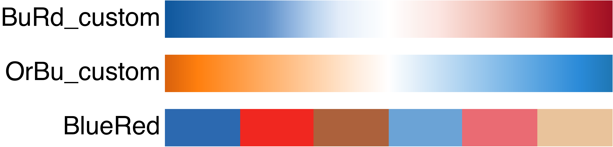
Using palettes with figure()¶
Pass palette name as third argument to figure().
cns.figure(100, 150, "Set1")
ax = cns.barplot(data=tips, x="day", y="total_bill")
ax.set_title("Set1 Palette")
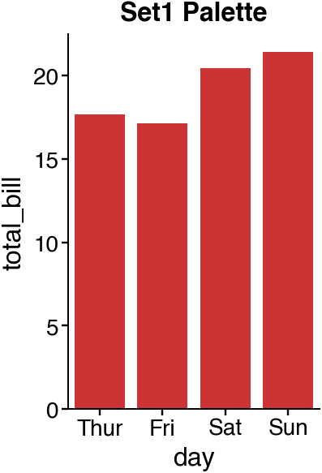
Text(0.5, 1.0, 'Set1 Palette')
Tableau palette¶
cns.figure(100, 150, "Tableau")
ax = cns.barplot(data=tips, x="day", y="total_bill")
ax.set_title("Tableau Palette")

Text(0.5, 1.0, 'Tableau Palette')
Bold palette¶
cns.figure(100, 150, "Bold")
ax = cns.barplot(data=tips, x="day", y="total_bill")
ax.set_title("Bold Palette")

Text(0.5, 1.0, 'Bold Palette')
Using palettes() function¶
Get palette colors programmatically.
cns.figure(100, 150, color_cycle="Ecotyper1")
ax = cns.barplot(data=tips, x="day", y="total_bill")
ax.set_title("Ecotyper1 Palette")
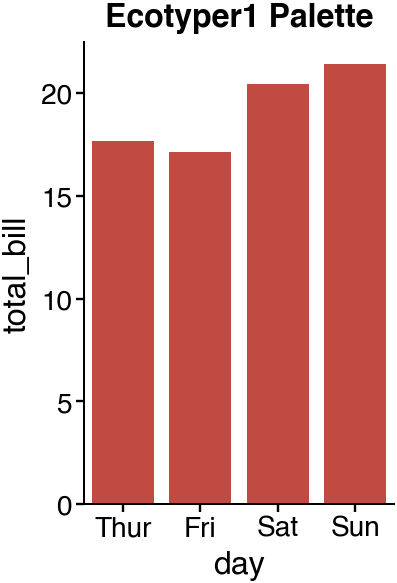
Text(0.5, 1.0, 'Ecotyper1 Palette')
Ecotyper2 palette¶
cns.figure(100, 150, color_cycle="Ecotyper2")
ax = cns.barplot(data=tips, x="day", y="total_bill")
ax.set_title("Ecotyper2 Palette")
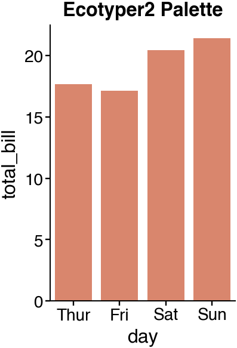
Text(0.5, 1.0, 'Ecotyper2 Palette')
Ecotyper3 palette¶
cns.figure(100, 150, color_cycle="Ecotyper3")
ax = cns.barplot(data=tips, x="day", y="total_bill")
ax.set_title("Ecotyper3 Palette")
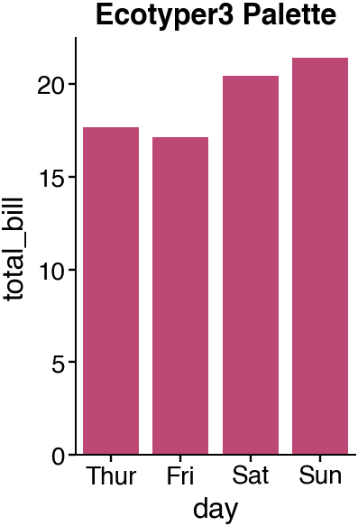
Text(0.5, 1.0, 'Ecotyper3 Palette')
Selecting specific colors from palette¶
Use get_hexcolors_from_apalette() to pick specific indices.
cns.figure(color_cycle=cns.get_hexcolors_from_apalette([0, 2, 4, 6]))
ax = cns.barplot(data=tips, x="day", y="total_bill")
ax.set_title("Selected Colors from Default Palette")
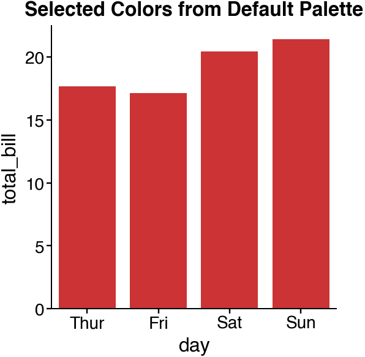
Text(0.5, 1.0, 'Selected Colors from Default Palette')
Select from a specific palette¶
Choose colors from any palettable palette.
cns.figure(
color_cycle=cns.get_hexcolors_from_apalette(
[5, 1, 3, 7], palette=palettable.colorbrewer.qualitative.Paired_12.hex_colors
)
)
ax = cns.barplot(data=tips, x="day", y="total_bill")
ax.set_title("Selected from Paired Palette")
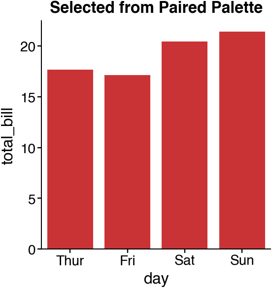
Text(0.5, 1.0, 'Selected from Paired Palette')
Reversed palette¶
Reverse color order with slicing.
cns.figure(color_cycle=palettable.colorbrewer.qualitative.Accent_8.hex_colors[::-1])
ax = cns.barplot(data=tips, x="day", y="total_bill")
ax.set_title("Reversed Accent Palette")
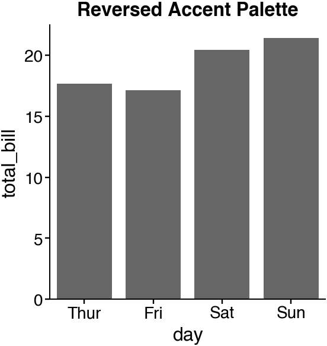
Text(0.5, 1.0, 'Reversed Accent Palette')
Custom color list¶
Define your own color sequence.
custom_colors = ["#E41A1C", "#377EB8", "#4DAF4A", "#984EA3"]
cns.figure(100, 150, color_cycle=custom_colors)
ax = cns.barplot(data=tips, x="day", y="total_bill")
ax.set_title("Custom Color List")
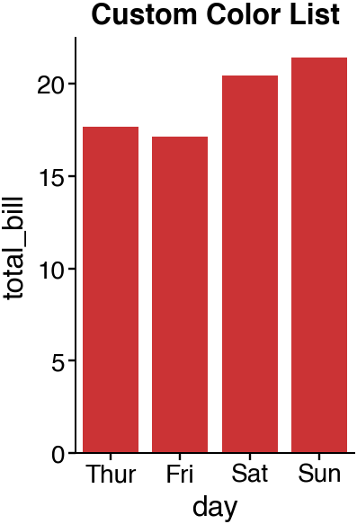
Text(0.5, 1.0, 'Custom Color List')
Color constants¶
cnsplots provides named color constants.
print("Available color constants:")
print(f" RED: {cns.RED}")
print(f" BLUE: {cns.BLUE}")
print(f" GREEN: {cns.GREEN}")
print(f" ORANGE: {cns.ORANGE}")
print(f" PURPLE: {cns.PURPLE}")
print(f" YELLOW: {cns.YELLOW}")
print(f" PINK: {cns.PINK}")
print(f" GRAY: {cns.GRAY}")
print(f" VIOLET: {cns.VIOLET}")
print(f" CHOCOLATE: {cns.CHOCOLATE}")
Available color constants:
RED: #D6372E
BLUE: #5189BB
GREEN: #70B460
ORANGE: #F08F35
PURPLE: #985EA8
YELLOW: #FADD4B
PINK: #E787E5
GRAY: #A3A3A3
VIOLET: #442288
CHOCOLATE: #662506
Using color constants¶
Apply color constants to plots.
custom_colors = [cns.RED, cns.BLUE, cns.GREEN, cns.ORANGE]
cns.figure(100, 150, color_cycle=custom_colors)
ax = cns.barplot(data=tips, x="day", y="total_bill")
ax.set_title("Using Color Constants")
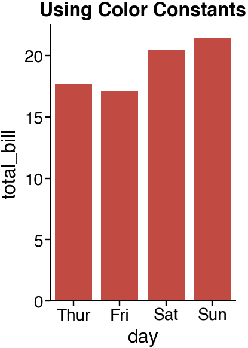
Text(0.5, 1.0, 'Using Color Constants')
Comparing palettes side by side¶
Use multipanel to compare different palettes.
mp = cns.multipanel(max_width=330)
mp.panel("A", 120, 80, color_cycle="Set1", margin_bottom=20)
cns.barplot(data=tips, x="day", y="total_bill")
mp.get_axes("A").set_title("Set1")
mp.panel("B", 120, 80, color_cycle="Tableau")
cns.barplot(data=tips, x="day", y="total_bill")
mp.get_axes("B").set_title("Tableau")
mp.panel("C", 120, 80, color_cycle="Bold")
cns.barplot(data=tips, x="day", y="total_bill")
mp.get_axes("C").set_title("Bold")
mp.panel("D", 120, 80, color_cycle="Set2")
cns.barplot(data=tips, x="day", y="total_bill")
mp.get_axes("D").set_title("Set2")
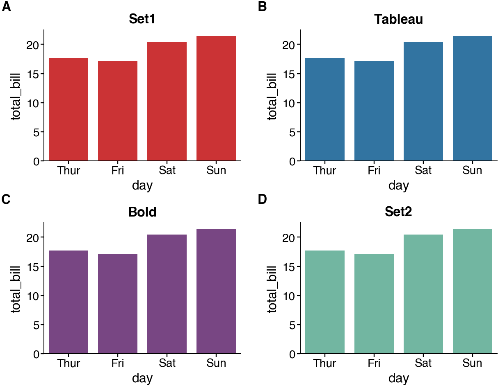
Text(0.5, 1.0, 'Set2')
Palettes for hue grouping¶
Different palettes affect grouped plots.
mp = cns.multipanel(max_width=440)
mp.panel("A", 100, 100, color_cycle="Set1")
cns.boxplot(data=tips, x="day", y="total_bill", hue="sex")
mp.get_axes("A").legend().remove()
mp.get_axes("A").set_title("Set1")
mp.panel("B", 100, 100, color_cycle="Tableau")
cns.boxplot(data=tips, x="day", y="total_bill", hue="sex")
mp.get_axes("B").legend().remove()
mp.get_axes("B").set_title("Tableau")
mp.panel("C", 100, 100, color_cycle="Bold", margin_right=0)
cns.boxplot(data=tips, x="day", y="total_bill", hue="sex")
cns.take_legend_out()
mp.get_axes("C").set_title("Bold")
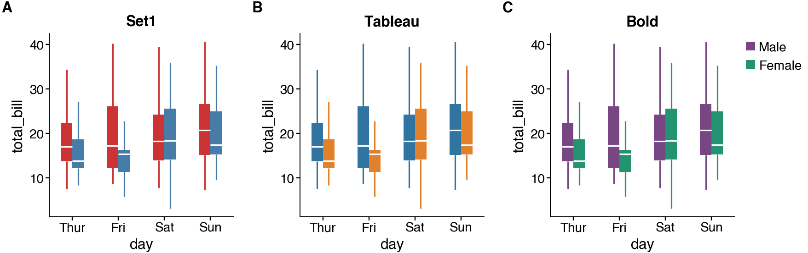
Text(0.5, 1.0, 'Bold')
Palette for scatter plots¶
Colors distinguish groups in scatter plots.
mp = cns.multipanel(max_width=520)
mp.panel("A", 120, 120, color_cycle="Set1")
cns.scatterplot(data=iris, x="sepal_length", y="sepal_width", hue="species", s=10)
mp.get_axes("A").legend().remove()
mp.get_axes("A").set_title("Set1")
mp.panel("B", 120, 120, color_cycle="Tableau")
cns.scatterplot(data=iris, x="sepal_length", y="sepal_width", hue="species", s=10)
mp.get_axes("B").legend().remove()
mp.get_axes("B").set_title("Tableau")
mp.panel("C", 120, 120, color_cycle="Dark2", margin_right=0)
cns.scatterplot(data=iris, x="sepal_length", y="sepal_width", hue="species", s=10)
cns.take_legend_out()
mp.get_axes("C").set_title("Dark2")
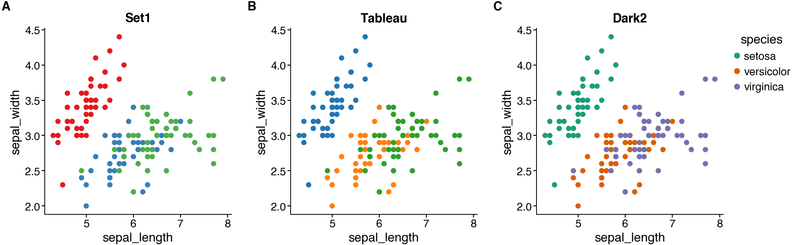
Text(0.5, 1.0, 'Dark2')
Ecotyper palettes for biological data¶
Specialized palettes for cell type visualization.
mp = cns.multipanel(max_width=370)
mp.panel("A", 80, 80, color_cycle="Ecotyper1", margin_bottom=20)
cns.barplot(data=tips, x="day", y="total_bill")
mp.get_axes("A").set_title("Ecotyper1")
mp.panel("B", 80, 80, color_cycle="Ecotyper2")
cns.barplot(data=tips, x="day", y="total_bill")
mp.get_axes("B").set_title("Ecotyper2")
mp.panel("C", 80, 80, color_cycle="Ecotyper3")
cns.barplot(data=tips, x="day", y="total_bill")
mp.get_axes("C").set_title("Ecotyper3")
mp.newline()
mp.panel("D", 80, 80, color_cycle="Ecotyper4")
cns.barplot(data=tips, x="day", y="total_bill")
mp.get_axes("D").set_title("Ecotyper4")
mp.panel("E", 80, 80, color_cycle="Ecotyper5")
cns.barplot(data=tips, x="day", y="total_bill")
mp.get_axes("E").set_title("Ecotyper5")
mp.panel("F", 80, 80, color_cycle="Ecotyper6")
cns.barplot(data=tips, x="day", y="total_bill")
mp.get_axes("F").set_title("Ecotyper6")
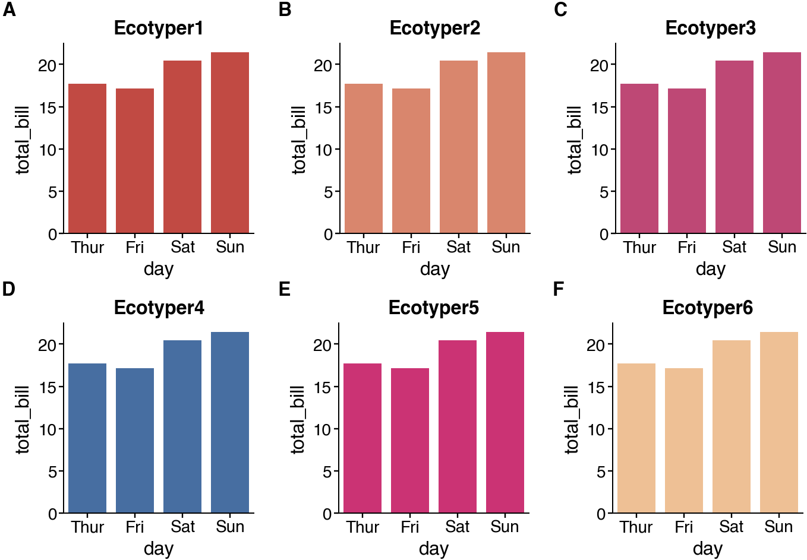
Text(0.5, 1.0, 'Ecotyper6')
Journal palettes for publication-ready figures¶
Cell is a custom cnsplots palette; the others match familiar journal-inspired styles.
mp = cns.multipanel(max_width=490)
mp.panel("A", 80, 80, color_cycle="Cell", margin_bottom=20)
cns.barplot(data=tips, x="day", y="total_bill")
mp.get_axes("A").set_title("Cell")
mp.panel("B", 80, 80, color_cycle="Nature")
cns.barplot(data=tips, x="day", y="total_bill")
mp.get_axes("B").set_title("Nature")
mp.panel("C", 80, 80, color_cycle="Science")
cns.barplot(data=tips, x="day", y="total_bill")
mp.get_axes("C").set_title("Science")
mp.panel("D", 80, 80, color_cycle="Lancet")
cns.barplot(data=tips, x="day", y="total_bill")
mp.get_axes("D").set_title("Lancet")
mp.newline()
mp.panel("E", 80, 80, color_cycle="NEJM")
cns.barplot(data=tips, x="day", y="total_bill")
mp.get_axes("E").set_title("NEJM")
mp.panel("F", 80, 80, color_cycle="JAMA")
cns.barplot(data=tips, x="day", y="total_bill")
mp.get_axes("F").set_title("JAMA")
mp.panel("G", 80, 80, color_cycle="JCO")
cns.barplot(data=tips, x="day", y="total_bill")
mp.get_axes("G").set_title("JCO")
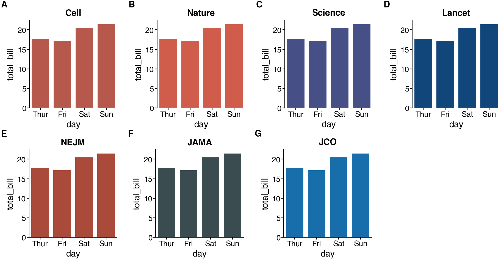
Text(0.5, 1.0, 'JCO')
Colorblind-safe palettes¶
Okabe-Ito and Paul Tol palettes — recommended by Nature for accessibility.
mp = cns.multipanel(max_width=370)
mp.panel("A", 80, 80, color_cycle="OkabeIto")
cns.barplot(data=tips, x="day", y="total_bill")
mp.get_axes("A").set_title("OkabeIto")
mp.panel("B", 80, 80, color_cycle="TolBright")
cns.barplot(data=tips, x="day", y="total_bill")
mp.get_axes("B").set_title("TolBright")
mp.panel("C", 80, 80, color_cycle="TolMuted")
cns.barplot(data=tips, x="day", y="total_bill")
mp.get_axes("C").set_title("TolMuted")
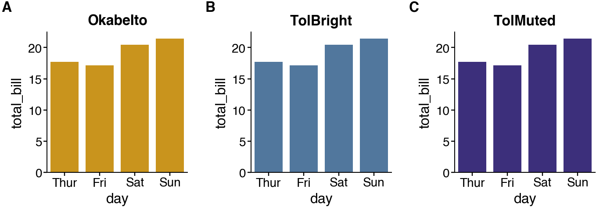
Text(0.5, 1.0, 'TolMuted')
Total running time of the script: (0 minutes 9.395 seconds)